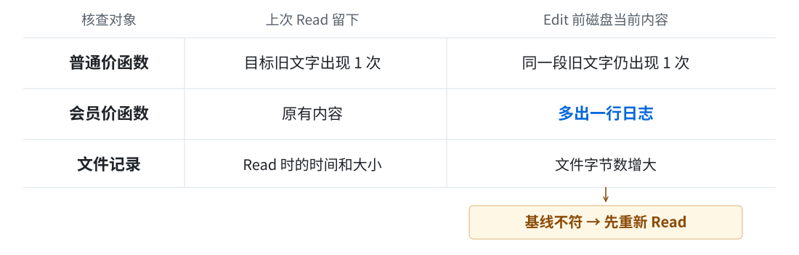
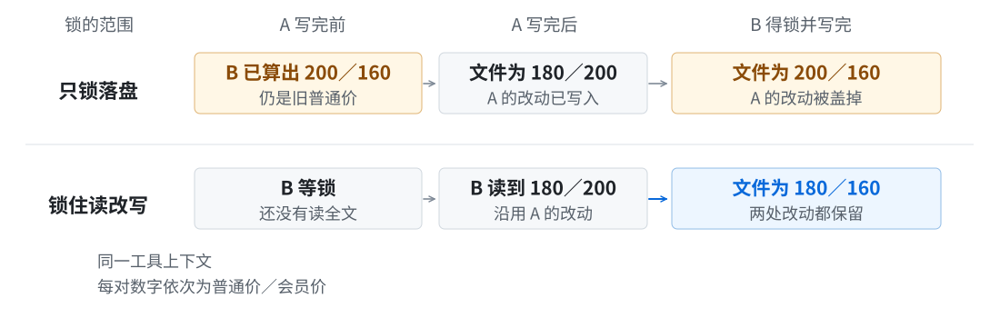
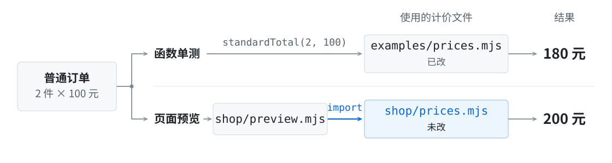

改价怎样找对位置、保留已有修改并验对结果？
假设有位普通顾客买两件单价 100 元的商品。你让 agent 给普通价打九折，会员原价照旧。它跑了测试，普通价函数已经算出 180 元。你打开订单预览，还是 200 元。
测试和页面都给了一个数字，改动究竟在哪一步没接上？用这笔订单推一遍。先翻回第一次找代码的时候，仓库里有两份名字一模一样的价格文件。
两个 prices.mjs，预览用的是哪一个？
手里只有文件名，可以用 Glob({"glob":"**/prices.mjs"}) 找到 shop/prices.mjs 和 examples/prices.mjs。手里若是页面文字或报错原话，就用 Grep 查内容。两种搜索都可通过 path 缩到应用目录。Glob 有忽略目录和扫描、返回上限。Grep 可以用 context 带上前后几行，会限制返回条数并截断长行。命中给出了要打开的候选文件。
打开 shop/preview.mjs，看这一行 import { standardTotal, memberTotal } from './prices.mjs'。./ 指向入口所在的 shop 目录。再看身份分支，普通顾客走 standardTotal，会员走 memberTotal。仓库更大时，RepoMap 的结构摘要或语言服务器 LSP 给出的定义、引用，也可以帮你走到这个调用处。
找到了行，也要用 Read 打开 shop/prices.mjs。文件长时用 offset 和 limit 取所需的几行。Read 展示带行号的原文，同时按路径在工具上下文里记下读取前的修改时间和文件大小。Edit 稍后用这份记录核对文件是否发生了变化。
export function standardTotal(count, price) {
return count * price;
}
export function memberTotal(count, price) {
return count * price;
}读到这里，两个函数的声明分得很清楚，函数里的乘法却一字不差。要是模型只把这一行发给 Edit，工具该怎么挑？
同一行乘法出现了两次
按第 2 行替换，文件顶部多一行注释就可能改到别处。叫模型重写整个文件，其余内容也要抄一遍。Edit 可以只收旧文和新文。先把 Read 显示的行号去掉，只交旧文 return count * price;，请求把它换成带九折的那一行。
这次只想改普通价，replace_all 没有打开。raw 是当前文件全文，old 是匹配到的旧文。同一行乘法出现两次，看看 Edit 会把哪条反馈交给模型。
count = raw.count(old)
if count > 1 and not args.get("replace_all"):
raise ToolRejected(f"old_string 在 {args['path']} 出现 {count} 次，不唯一。"
"只改一处时，把周围未改动的文字同时带入 old_string 和 new_string。"
"要替换所有匹配时请使用 replace_all。")
next_text = raw.replace(old, args["new_string"])raw.count(old) 数出 2，程序走到 raise ToolRejected。模型会收到 old_string 在 shop/prices.mjs 出现 2 次，不唯一。 后面的提示叫它给旧文和新文都带上周围未改的文字，好让下一次请求只命中一处。如果程序默认改第一处，把会员函数挪到前面就会让会员变成 180、普通价仍是 200。开 replace_all 则两种身份都会变成 180。「单处编辑需要一段在全文恰好出现一次的旧文。」找不到旧文时，Edit 在计数前就会停下。
把 standardTotal 的函数头和闭合花括号带进旧文，计数就变成 1。第 95 行用 raw.replace 构造替换后的全文，第 98 行的 atomicWrite 才写入文件。替换的是匹配的整段，新文也要把函数头和花括号写全。倘若新文只留下那行 return，工具会把整个函数换成一条跑到函数外面的语句。
{
"path": "shop/prices.mjs",
"old_string": "export function standardTotal(count, price) {\n return count * price;\n}",
"new_string": "export function standardTotal(count, price) {\n return count * price * 0.9;\n}"
}旧文字面没找到时，若存会对短旧文尝试直引号和弯引号等有限近似，再数找到的实际写法出现几次。回包仍说找不到或不唯一时，重新 Read，从当前文件复制带独有上下文的原文。查看匹配规则
旧文已经唯一，为什么还要重读？
函数头已经让这次替换只命中一处。可在模型发出 Edit 前，同事给 memberTotal 加了一行 console.log("member total requested");。普通价原文一字未动，还是只出现一次。这份旧文还能定位替换位置，要不要先重新看一眼整个文件？
CoreCoder 的 edit_file 读取当前全文，旧文仍只出现一次，就做局部替换，保留同事的日志。Claude Code 官方文档说明了同样的情况。读取文件不需再询问、旧文在当前文件中仍精确且唯一时，修改可以继续，结果会提醒还有其他改动。若存的 Edit 则先用 checkReadBaseline 比对当前文件与上次 Read 记下的修改时间和字节数。CoreCoder 工具篇 · Claude Code · 文件变化后的 Edit
try:
current = fileMeta(absolute)
except OSError as exc:
raise ToolRejected(f"写入前无法核对文件:{path}。请重新 Read。{exc}") from exc
if current != meta:
raise ToolRejected(f"文件自上次 Read 后已被外部改动:{path}。请重新 Read 看最新内容再写,以免覆盖他人改动。")多出的日志让文件变大，current != meta 为真。若存还没开始数旧文就拒绝这次编辑，让模型重新 Read。只看替换位置，旧文仍然够用。先查读取基线，则会为一行可能无关的日志多读一次文件，换来模型能看过当前内容，再决定原来的改法是否还合适。

重读后，模型能看到会员日志。如果普通价旧文仍然适用，就沿用原请求。Edit 从当前全文替换匹配段，日志和会员公式都留在原处。基线靠修改时间和大小发现变化，若两个值都没变，或者外部程序在核对以后才写，还得靠后续核查发现。
换成 Write 覆盖全文，即使先读到了最新会员日志，只要新稿漏抄这一行，保存的文件也会少这一行。只改普通价时，Edit 让替换范围停在那处旧文。
查阅连续整篇覆盖的检查
同一工具上下文里，对刚由 Write 写过的文件再次整篇覆盖会被拦住。拿到一次前台 Bash 结果就会清掉这组待验证标记，命令退出码非零或与该文件无关也一样。要确认会员日志和价格分支无误，得看实际检查了什么。Write 的等待判断 · Bash 清除标记
为什么只锁写入还会丢修改？
换个条件，看看基线核对该放在哪一步。把文件恢复到两种价格都为 200。A 要给普通价打九折，B 要给会员价打八折。两段旧文都唯一，两个人开始时也都拿到了同一版文件。如果只给落盘上锁，A、B 可以在排队前各自读全文、算出整份替换结果。
| 步骤 | A 手里 | B 手里 | 磁盘 |
|---|---|---|---|
| A、B 都读完 | 200／200 | 200／200 | 200／200 |
| A 先写 | 180／200 | 200／160 | 180／200 |
| B 后写 | 180／200 | 200／160 | 200／160 |
每格依次写普通价和会员价。B 算好 200／160 时，A 的九折还没写进去。就算 B 等 A 的写入完成再保存，B 手里还是那份带着 200 的普通价。这道锁得挪到检查和读取之前。
with fileLock(absolute):
checkReadBaseline(absolute, args["path"], ctx)
atomicWrite(absolute, next_text)
refreshReadBaseline(absolute, ctx)若存让 fileLock 包住检查、读全文、计算替换、写入和刷新。等 B 拿到锁，A 已经写完了。两次工具调用若共用同一个工具上下文（ToolContext），A 刷新过的版本记录对 B 也可见，B 在 180／200 的全文上继续改，写出 180／160。若各有一份工具上下文，B 仍拿着旧记录，取得锁以后才发现基线冲突，先重读自己的那一份。怎么确认前一次修改没被盖掉？回归测试把文件缩成两行，在同一个工具上下文里同时提交两次编辑，分别把 A 改成 X、B 改成 Y。它检查磁盘上的文件，断言两行已经依次变成 X 和 Y。同一文件的并发编辑断言

这里排队的是同一进程里各次 Edit 的内部读取和修改。单独发起的 Read 不取这把锁。若来自主循环的同一批工具调用，批次执行器还会把具有持久副作用的调用串行执行。批次执行顺序
锁按 realpath 和 normcase 处理后的路径领取。另一条路径可以用自己的锁，外部编辑器和独立进程则不参与这张锁表。路径锁
保存时，若存先写同目录的临时文件，再用 os.replace 换到目标位置。要是替换已经成功，之后刷新基线才失败，磁盘可能早已是新版。先读文件和差异，再决定是否补改。临时文件与替换
函数算出 180，预览还是 200
回到只改普通价的任务。Edit 的成功回包会报告替换次数和首个匹配行，并生成附近的差异。把第 2 行摘出来看，减号一侧是 return count * price;，加号一侧多出 * 0.9。函数头和花括号在两侧都保留着。如果做的是 replace_all，回包里的差异也只展示首处附近，核对范围时还要看完整差异。回包的差异范围
现在推一遍开头的两个结果。假如只改到了 examples/prices.mjs，直接测里面的 standardTotal(2, 100) 就会得到 180。订单预览依旧导入 shop/prices.mjs，那里算出来还是 200。即使单测已经证实 shop/prices.mjs 的普通价函数算出 180，入口若把普通顾客送进会员分支，预览同样会显示 200。

所以我会先核对预览实际导入的路径，再看普通顾客进了哪个分支。随后用同一笔订单从预览入口走两遍，普通顾客要看到 180，会员仍要看到 200。
如果预览里两种身份都成了 180，就先读会员函数和差异。有 * 0.9 多出来，就只恢复会员公式。公式仍是原价，就查会员是否也被送进普通价分支。找到自己改错的片段再撤回，整份文件退回旧版会把后来才加的会员日志也删掉。补改完，从原入口再走两遍。
预览的数字都对，为什么结算仍是 200？
改价需求还包括正式结算。预览检查显示普通价 180、会员价 200，客服却拿来一张普通顾客实际付了 200 元的订单。现在只有预览检查记录，你要补查什么？
展开判断
我会查正式结算入口实际使用的价格实现和身份分支，用同一笔订单从那里重跑普通和会员两条路径。预览的记录只能核对预览，无法说明正式结算选的是同一段代码。
这一章带走什么
- 两个价格函数都有
return count * price;，单处替换会在这里停下。带上standardTotal的函数头就能找准普通价那一处。工具会换掉整段旧文，所以新文也得把函数头写回去。 - 旧文还能命中，文件也可能已经改过。若存发现修改时间或大小变了，会要求模型重读。
- 同一进程里，文件锁要在编辑读取全文前拿到。只给写入排队，后写的一方还是可能用旧版本算出的全文盖掉前一次修改。
- 差异能看出公式改在哪，价格是否生效要从实际入口验。普通价函数算出 180，入口走了会员分支，预览还是 200。
下一章换一份简单的价格说明。模型只想把 pricing.txt 里的“普通价”换成“九折”，旧文已经定位，终端为何还要等人同意？
面经自测
Coding Agent 怎样验证自己改的补丁？发现改坏了怎么办？
未具名 B 端公司 · 项目面 · 面经原帖 · 题意转述
展开参考回答
我先从用户遇到问题的入口追到真正生效的代码，看差异是不是只改了目标，再从同一个入口复查要变化和要保持的行为。发现改坏了，先核对当前文件，只撤回自己那次出错的改动，再跑一遍原用例。
拿这笔订单来说，我会把普通顾客和会员各走一遍。普通价应该从 200 变成 180，会员仍是 200。单独调用一个计算函数算对了，页面接错了函数仍然会出错。
项目里的 Agent 用了哪些工具？举例讲讲它们各自怎么工作。
字节跳动 · 二面 · 面经原帖 · 题意转述
展开参考回答
我会按手里的线索选工具。知道文件名的一部分就搜路径，知道页面显示的原话就搜内容，找到候选后再读上下文和调用处。
用户已经给了明确报错，按语义找却没找到，你会怎么改？
阿里巴巴·淘天供应链 · 一面 · 面经原帖 · 题意转述
展开参考回答
拿原始报错文字在实际运行的模块里搜索，读命中的条件和调用方。碰到同名文件，沿当前入口的导入路径核对。
为了唯一定位多带了函数头，新文里为什么也得把函数头带上？
若存设计题
展开参考回答
旧文仍然只有一处，为什么还要我重新读文件？
若存设计题
展开参考回答
多个 Agent 一起工作时，怎么处理并发和资源竞争？
小红书 · 一面 · 面经原帖 · 题意转述
展开参考回答
先找它们是否会改同一份共享内容。能并行的读取可以并行；同一文件的编辑要一起排队，一次 Edit 在同一把锁内核对版本、读取全文、计算修改并写回。
两个任务各改一个价格函数，如果它们拿着同一份旧全文同时算改动，后写入的一份可能把先写的修改盖掉。
AI 写的代码已经通过测试，怎样判断能不能合并？
科大讯飞 · 一面 · 面经原帖 · 题意转述
展开参考回答
我会先看测试究竟走了哪个入口，再查差异和没有覆盖的条件。
如果单测直接调用普通价函数，即使 180 通过，还要从订单预览检查普通顾客看到 180，并让会员走同一入口看到 200。还得看改动有没有顺手覆盖同事的修改。